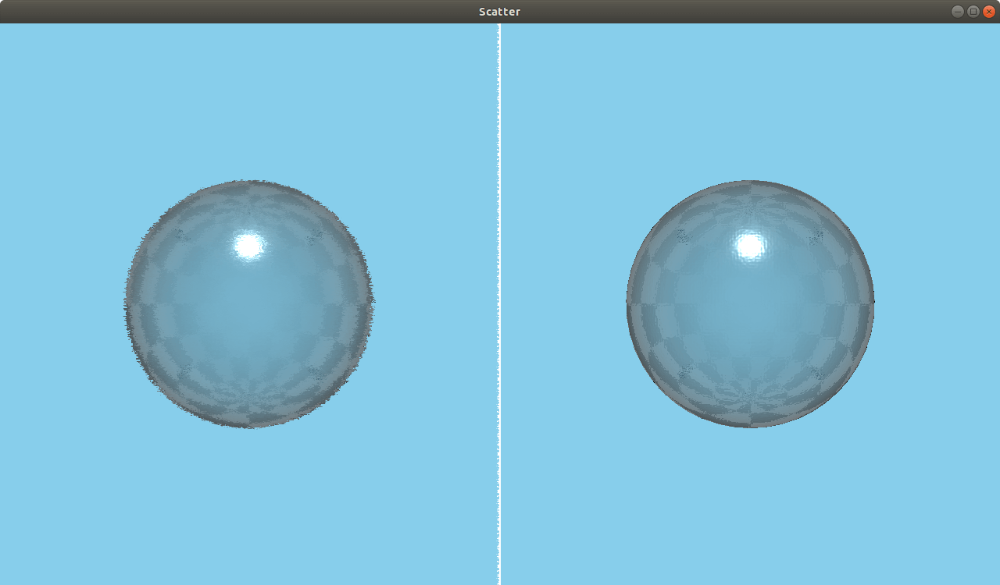

Scatter QML Type
A scatter noise effect. More...
| Import Statement: | import QtQuick3D.Effects 1.15 |
Properties
- amount : real
- direction : int
- noiseSample : TextureInput
- randomize : bool
Detailed Description

Scatters the pixels in a scene, creating a blurry or smeared appearance. Without changing the color of each individual pixel, the Scatter effect redistributes the pixels randomly, but in the same general area as their original positions.
Property Documentation
amount : real |
Determines how much to scatter. Range is [0...127]. 10 by default.
direction : int |
The direction in which to scatter the pixels. Set to 0 for both horizontal and vertical, 1 for horizontal, and 2 for vertical. 0 by default.
noiseSample : TextureInput |
The scatter noise texture map. Default is a Texture with source "maps/brushnoise.png".
randomize : bool |
Specifies whether scattering changes at each frame or not. true by default.